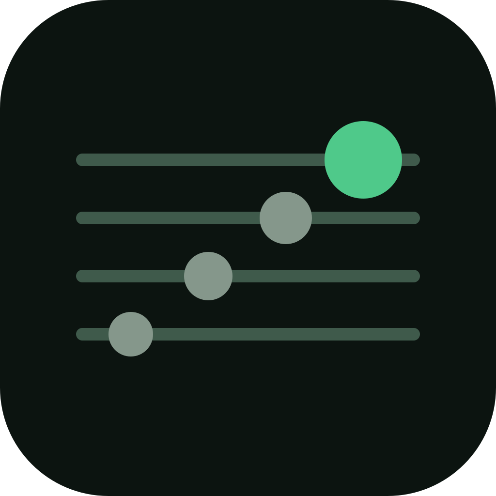

Des leçons parties de tes morceaux
Une leçon commence par un riff ou un enchaînement que tu connais, puis explique ce qui s'y passe : les 12 notes, les intervalles, les accords, la pentatonique, la tonalité.

FretUpGuitare · théorie · sans ennui
FretUp t'apprend la théorie de la guitare à partir des morceaux que tu joues déjà. Pas de solfège : le manche, tes oreilles et ta guitare.
Bêta fermée en préparation. Tu veux la tester ? Écris-nous
Une leçon commence par un riff ou un enchaînement que tu connais, puis explique ce qui s'y passe : les 12 notes, les intervalles, les accords, la pentatonique, la tonalité.
L'accordeur, les jeux de notes et le « Joue-le » écoutent ta vraie guitare. Une corde, une note, un accord gratté : elle te dit ce qui est juste et ce qui manque.
Touche une case, tu entends la note. Les accords, les gammes et les intervalles sont toujours montrés sur un manche horizontal, comme tu le vois en jouant.
Plus aigu ou plus grave, rejouer une note, reconnaître un intervalle : des jeux courts, sans guitare s'il le faut.
Changements d'accords, pentatonique, bends précis, métronome qui monte en tempo. Tes records restent sur ton téléphone.
Pas de série quotidienne : on compte par semaine. Les révisions reviennent quand il faut, jamais en culpabilisant.
Pas de compte, pas de serveur, pas de publicité, pas de pistage. Ta progression reste sur ton appareil, et le micro n'enregistre rien : le son est analysé sur le moment, puis oublié. Export et import de ta sauvegarde en un geste. L'app existe en français, anglais et allemand, avec les notes en Do Ré Mi, en C D E ou en notation allemande.
Oui, pendant la bêta tout est ouvert. Une partie des contenus avancés pourra devenir payante plus tard ; l'essentiel pour apprendre restera gratuit.
Elle aide, mais pas besoin : le mode « Sans guitare » remplace le micro par le toucher, pour tous les jeux et les leçons.
Aux guitaristes autodidactes de 1 à 5 ans de pratique que la théorie classique ennuie. Électrique ou acoustique ; la basse viendra plus tard.
Pour vérifier ce que tu joues : la hauteur d'une note, un accord gratté. Le son est analysé sur le téléphone et n'est ni enregistré ni envoyé.
Disponible sur Android bientôt. Pour rejoindre la bêta ou donner ton avis : contact@fretup.fun